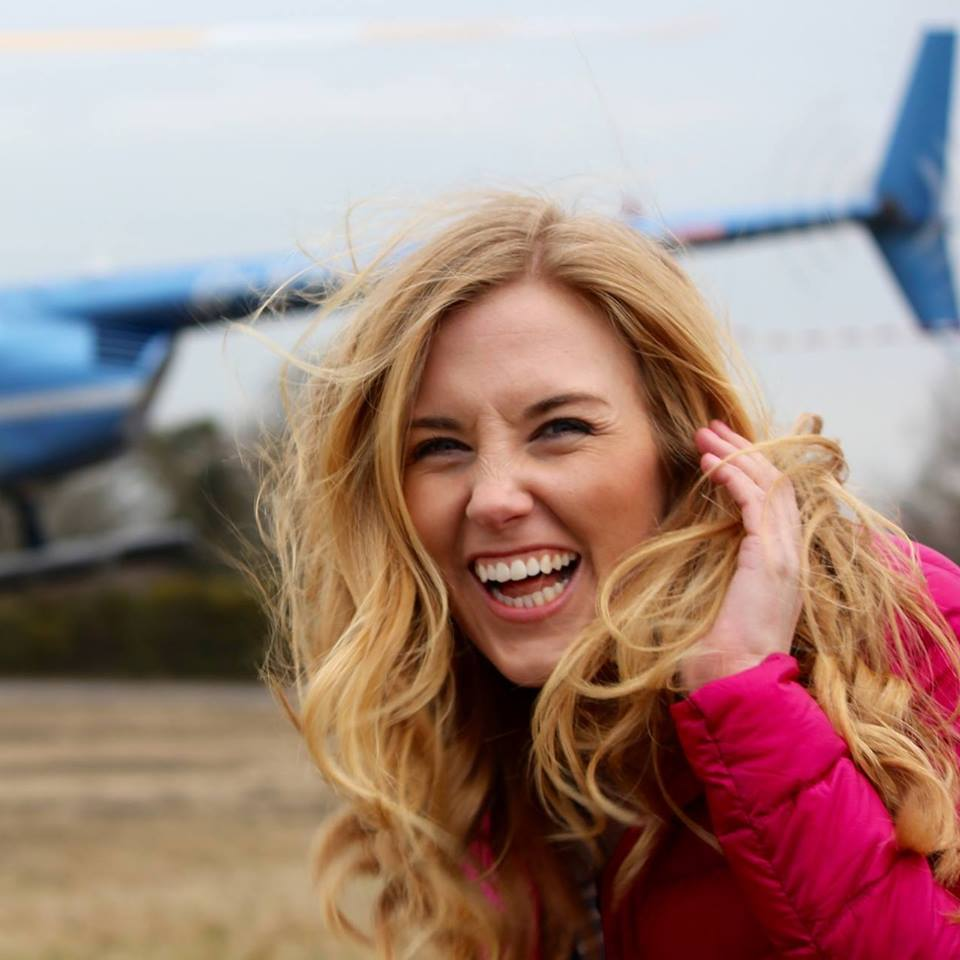

Maddie Moate (born 26 July) is a British TV presenter and YouTube filmmaker. She is a science communicator but studied theatre, film and television at Bristol University. Since 2014, Moate has been the lead presenter of BBC Earth Unplugged, a BBC-produced YouTube channel with over 480,000 subscribers. The series garnered the notice of BBC America, who compiled the highlights to make a one-off television programme, It's a Mad Mad Maddie World! Moate presented a 25-episode series for CBeebies entitled Do You Know? that had an average audience of 328,000. A second series has been commissioned by CBeebies produced by Sarah Trigg. She won the BAFTA Children's Awards in 2017 in the category of presenter.
 Tweets by maddiemoate This is the link to Maddie's wikipedia page.